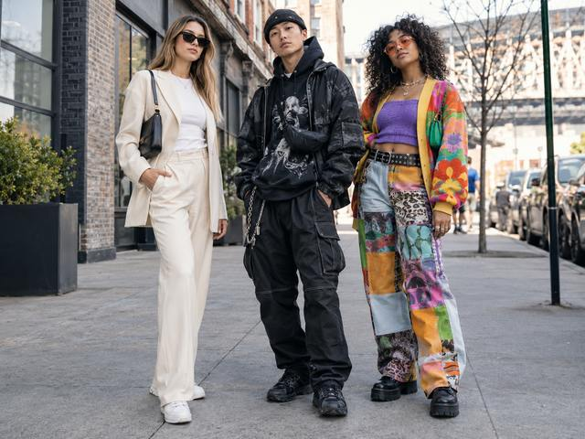
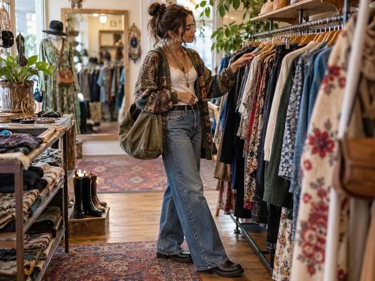
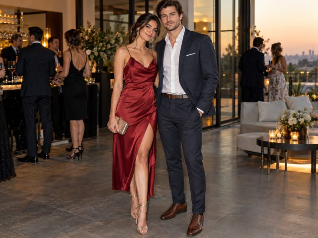
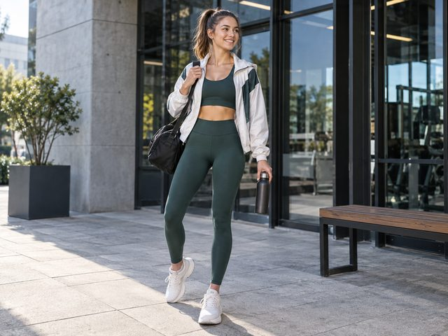

Sheet 1 / 8 · Lead-in · Before you start
Before you start
Activity 1 · Clothes and appearance in your professional life
3:00Look at the 6 street-style photos; for each one, answer the 3 English questions below.

Three friends, three styles
- Question 1"Look at the three people. How would you describe each person's style in one or two words?"
- Question 2"Which of the three styles is closest to your own everyday style? Why?"
- Question 3"Do your own friends dress similarly to each other, or very differently, like this group?"
An oversized blazer with jeans
- Question 1"She has mixed a smart blazer with casual jeans and trainers. What do we usually call this kind of mix?"
- Question 2"Would you wear an outfit like this to work? What about to meet friends?"
- Question 3"What single item do you think makes the biggest difference to how smart she looks?"

In a small clothes shop
- Question 1"Where do you think this woman is, and what is she doing?"
- Question 2"Do you enjoy shopping for clothes in person, or do you prefer shopping online? Why?"
- Question 3"Her outfit mixes several patterns and layers. Do you think mixing patterns like this looks stylish or messy?"

A smart evening party
- Question 1"What kind of event do you think this is, and how can you tell from their clothes?"
- Question 2"How is her outfit different from something she might wear to work or at the weekend?"
- Question 3"Do you have an outfit like this for special occasions? When did you last wear it?"

On the way to the gym
- Question 1"What clues in the picture tell you this woman is on her way to, or from, the gym?"
- Question 2"Some people wear sportswear all day, not just for exercise. What do you think about that?"
- Question 3"How often do you exercise, and what do you usually wear when you do?"
On the way to the office
- Question 1"What job or industry do you imagine this man works in, based on his clothes?"
- Question 2"In your own workplace, is this kind of formal dress required, optional, or never worn?"
- Question 3"Do you think the way someone dresses at work affects how colleagues or patients see them?"
Activity 2 · How many words do you already have for the 6 groups?
5:00For each group, type every English word / phrase you can think of (separated by commas).
Group 1Open group →
What to wear — clothes, footwear, materialsWhat are the people around you wearing right now?
0 words
Group 2Open group →
How you look — appearance & styleHow would you describe a colleague's style in three words?
0 words
Group 3Open group →
What you do with clothes — phrasal verbsWhat do you do with clothes — from the shop to the wardrobe?
0 words
Group 4Open group →
How much fashion matters — attitudesHow important is fashion to you — and how would you say so in English?
0 words
Group 5Open group →
Comparing & choosingTrainers or leather shoes for a ward round — how many ways can you compare them?
0 words
Group 6Open group →
The fashion industry — issues & opinionsWhat is wrong with the fashion industry, in your view?
0 words